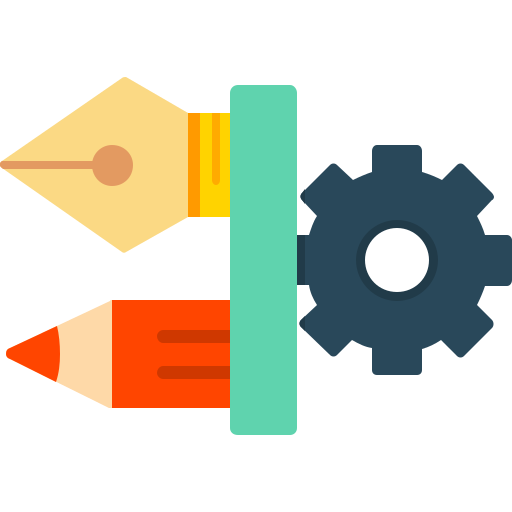
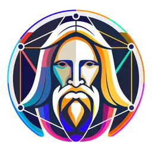
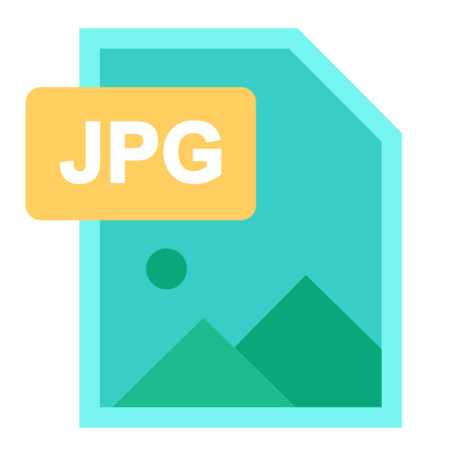
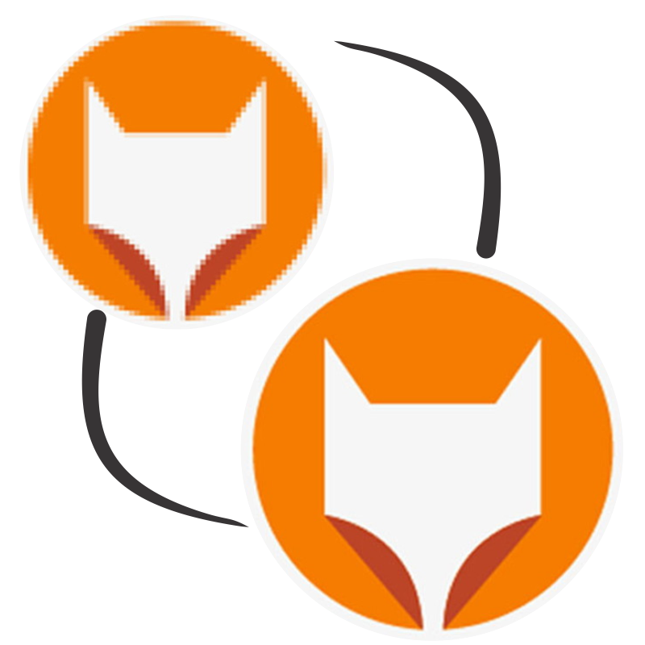

Ferramentas Gráficas
Ferramentas gráficas são softwares utilizados para criar e manipular imagens. Eles permitem desenhar, colorir, transformar, e realizar ajustes em ilustrações, fotos e outros tipos de imagens. Alguns dos softwares mais populares incluem:
- Adobe Photoshop: Muito usado para edição de fotos e manipulação de imagens em raster (pixel).
- Adobe Illustrator: Especializado em gráficos vetoriais.
- CorelDRAW: Popular para design gráfico e ilustrações vetoriais.
- GIMP: Software gratuito e de código aberto para edição de imagens raster.
- Inkscape: Focado em gráficos vetoriais e também de código aberto.
Criação de Imagens 
A criação de imagens envolve conceber e materializar uma ideia visual em um formato digital. Esse processo pode incluir a criação de ilustrações do zero (como desenhos ou pinturas digitais), edição de fotos (ajuste de cores, recorte, etc.), ou composição gráfica (mistura de imagens, textos e formas para criar designs). Ferramentas como Illustrator e Photoshop têm funcionalidades para manipular tanto vetores quanto pixels, facilitando o processo de criação e ajuste.
A criação de imagens envolve conceber e materializar uma ideia visual em um formato digital. Esse processo pode incluir:
- Ilustração Manual: Desenho do zero, como pinturas digitais e criações detalhadas em softwares como Photoshop e Illustrator.
- Edição e Composição Gráfica: A manipulação de fotos e combinação de elementos (imagens, textos, formas) para formar composições e designs visuais.
- Inteligência Artificial (IA): Hoje, ferramentas de IA, como DALL-E, Midjourney e Stable Diffusion, estão sendo amplamente usadas para criar imagens a partir de descrições textuais. Esses sistemas são treinados em bancos de dados de imagens e podem gerar ilustrações, fotos, paisagens e até pinturas em estilos variados, com base em comandos escritos.
Essas ferramentas de IA expandiram as possibilidades criativas ao permitir que pessoas sem habilidades avançadas em design ou ilustração criem imagens únicas rapidamente. O uso de IA permite ajustes, como mudança de estilo, adição de detalhes e até adaptação de imagens para diferentes contextos, e isso tudo apenas com instruções em texto.
Edição de Imagens 
A edição de imagens engloba as ações de modificar, corrigir e aprimorar imagens existentes. As ferramentas de edição permitem ajustar a exposição, o contraste, a saturação, aplicar filtros, remover imperfeições, redimensionar, rotacionar e recortar imagens. A edição pode ser feita em:
- Imagens raster: Manipulação de pixels, onde cada ponto de cor na imagem pode ser alterado. Ideal para fotos e imagens detalhadas, mas a qualidade pode se perder ao redimensionar.
- Imagens vetoriais: Imagens baseadas em pontos e curvas matemáticas. Permitem redimensionamento sem perda de qualidade.
Formatos de Imagens 
Os formatos de imagens determinam como os dados da imagem são armazenados e compactados. Principais formatos:
- JPEG (ou JPG): Formato de compressão com perdas (ideal para fotos).
- PNG: Suporta transparência e tem compressão sem perdas.
- GIF: Suporta animações, mas com limitação de cores.
- BMP: Formato sem compressão, ocupa mais espaço e não é prático para uso online.
- TIFF: Muito usado em impressão, pois mantém alta qualidade.
- SVG: Um formato vetorial, ideal para imagens que precisam ser escaláveis.
Vetorização 
Vetorização é o processo de converter imagens raster (feitas de pixels) em imagens vetoriais (feitas de curvas e pontos). Imagens vetorizadas não perdem qualidade ao serem redimensionadas, pois são baseadas em cálculos matemáticos em vez de pixels. Softwares como Adobe Illustrator e Inkscape permitem traçar contornos e converter essas formas em vetores. Vetores são amplamente usados em logotipos, ícones e ilustrações que exigem flexibilidade de redimensionamento.

SVG é um formato vetorial baseado em XML, amplamente usado para gráficos escaláveis na web. Ele permite criar imagens que podem ser redimensionadas sem perda de qualidade, sendo ideal para logos, ícones e outros elementos gráficos. Por ser um código XML, um SVG pode ser manipulado diretamente com CSS e JavaScript, possibilitando animações e interatividade.